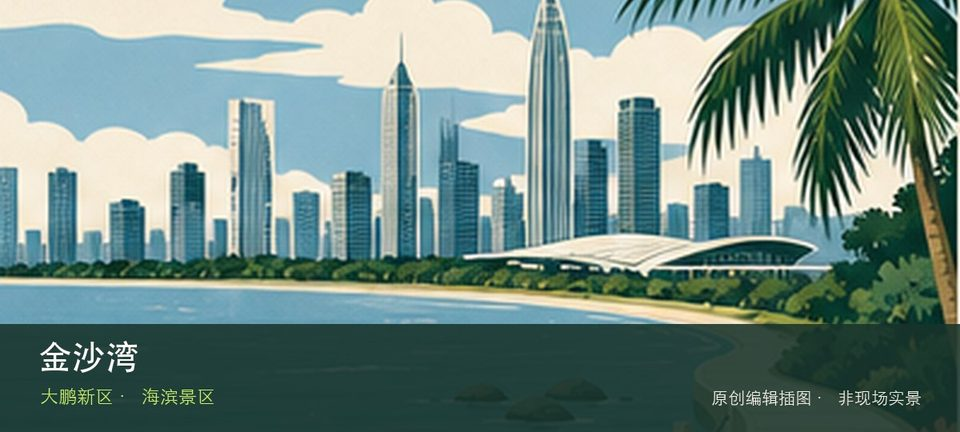

适合谁
适合确认最新运营信息后再出发的度假客；未查开放时不应作为跨城唯一目的地。

SHENZHEN GUIDE · 295
大鹏 · 海滨景区
金沙湾位于大鹏湾东岸，沙滩、度假项目与持续建设运营交织，名称可能对应不同阶段产品，最新公众入口和票务必须先核对。先辨认金沙湾沙滩，再观察度假运营项目，两者共同说明这里为何不能被同类地点的泛化标签替代。海岸体验取决于金沙湾沙滩与度假运营项目当天的风浪、潮位和运营边界，不宜把旧照片当成实时承诺。先确定安全退路和返程节点，遇雷雨、台风影响或封闭提示就缩短行程。
WHY GO
适合确认最新运营信息后再出发的度假客；未查开放时不应作为跨城唯一目的地。
先从运营主体确认开放、票价和入口，若信息不完整就准备大鹏所城等替代行程；不进入施工围挡。
公共交通先到大鹏湾东岸片区，再以金沙湾公开参观入口为终点；多入口地点须按计划游线选择入口，并预先锁定返程站点。
自驾只使用金沙湾官方或片区正规停车场；海滨旺季先查预约、限行和接驳，满位后不要在村道或应急通道等候。
10 月至次年 4 月体感较舒适；夏季亲水先查海况，雷暴、台风影响或大浪提示下不靠近水线。
NEARBY IDEAS